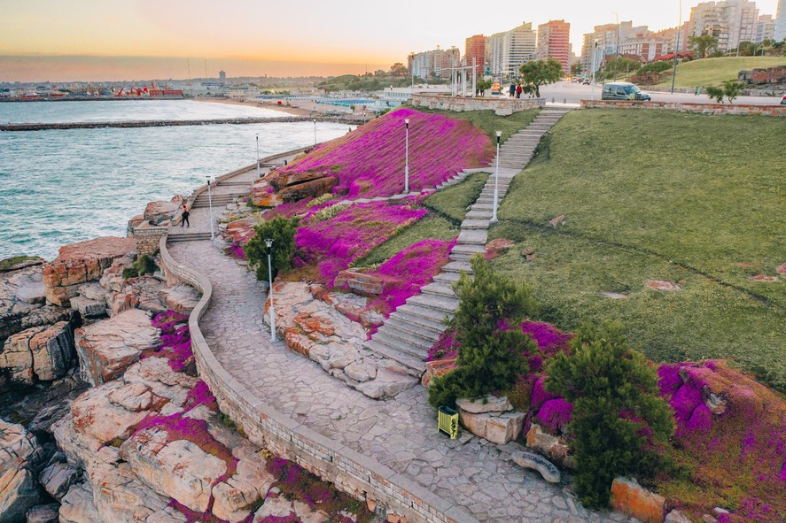
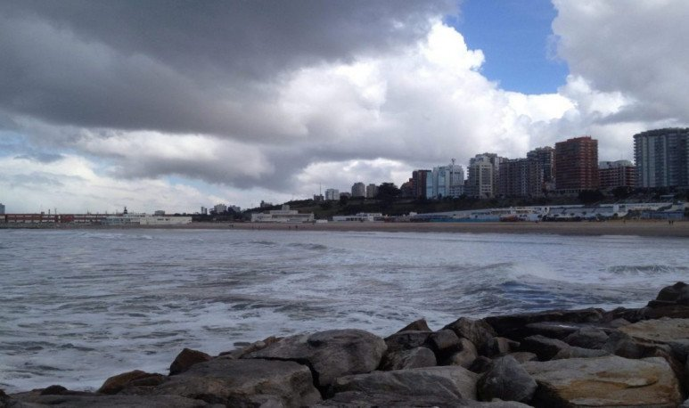
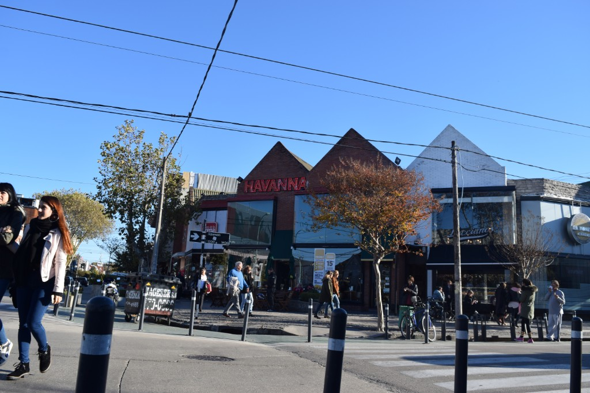

Llegada y primer paseo por la costa
El mes pasado viajé unos días a Mar del Plata con mi familia. Salimos temprano desde Buenos Aires; son algo más de cuatro horas en auto, pero el trayecto se pasa bien si vas con buena compañía. Apenas llegamos, antes de terminar de acomodar las cosas en el departamento, salimos a la costa. Descubrí unos senderos sobre el acantilado que no conocía: flores en la ladera, el mar a un lado y el perfil de la ciudad al fondo. Me sorprendió lo linda que se ve esa zona al atardecer.

Playa y rompeolas
Tuvimos días soleados y también uno con el cielo más cubierto; en ambos casos el mar cambia de aspecto y vale la pena salir igual. Me metí un rato al agua: estaba fría, pero después de tanto tiempo sin ir a la playa no quería volver sin haberme mojado. Más tarde dimos una vuelta por el rompeolas; desde ahí se ve la línea de edificios sobre la costa y las olas entre las rocas. Saqué varias fotos; esta es de las que mejor resume ese día.

Centro, Güemes y un alto en Rawson
Un día recorrimos el centro y la peatonal San Martín; en otro nos quedamos más tiempo por Güemes, con sus locales y cafés. En Rawson pasamos por una esquina que seguro muchos conocen: Havanna y una heladería al lado. No buscábamos nada sofisticado; compramos alfajores para llevar y un helado para compartir. A veces lo simple alcanza.

Para cerrar
Fueron pocos días, pero intensos: buena comida, muchas caminatas y un cambio de aire que venía bien. Me quedaron pendientes algunos lugares —por ejemplo museos que no llegué a visitar—, así que ya tengo motivos para una próxima vez. Mar del Plata combina el bullicio de temporada con momentos tranquilos frente al mar; en conjunto, un viaje que volvería a hacer sin dudarlo.